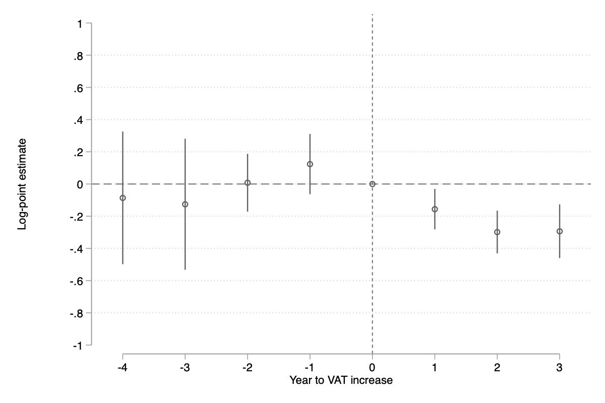

Download
Abstract
Using a quasi-experimental setting, we document that corporations decrease declared profits and corporate income taxes in response to an increase in the VAT rate. In an attempt to raise tax revenue during the Greek economic crisis, a 16% VAT rate, which existed for historicopolitical reasons in Greek islands, was harmonised to the national 24% rate. We combine tax filings with Orbis and ICAP data that enable us to geolocate corporations and to construct comparable groups based on locations in or out of the preferential rate. Counteracting the reform’s intended effect, declared profits decreased by 28% and corporate income taxes by 34% on a permanent basis. Macroeconomic factors and a fall in reported revenue cannot fully explain this decrease. Pervasive tax evasion in the Greek islands, where corporations might have an opportunity to adjust profits, offers a plausible explanation of the magnitude of responses.
Figure
